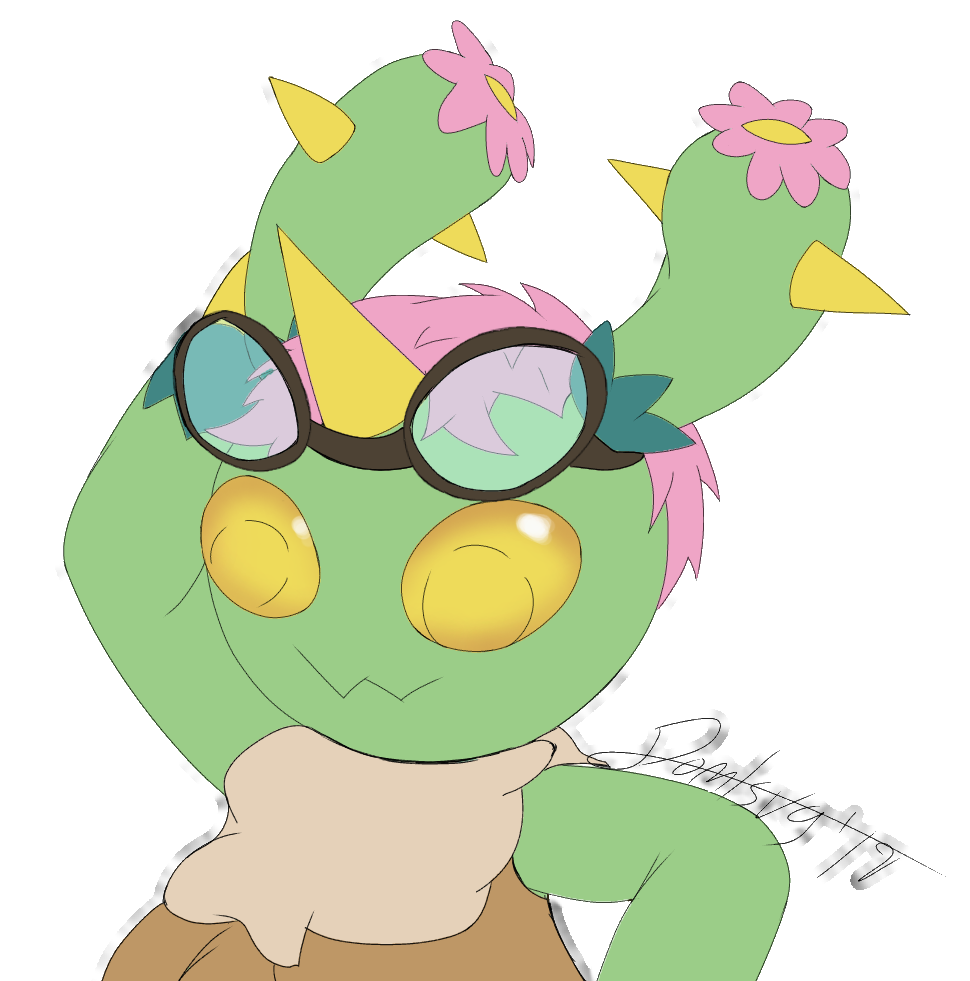

So let's start by breaking down the steps into a short list.
This is the best way for you to create your character from start to finish, and it will assure you can create a character that will have the previously mentioned qualities.
So let's start with
Step 1; Background. Before you even think about rolling or selecting any stats, come up with a few character ideas. Think about their very basic qualities; gender, appearance, and where they come from.
Think about how they got to adventuring, what they did beforehand, any professions they may have had. This will be the hook for you to build your character's personality.
Think about how their upbringing or life would affect their mannerisms, their views on the world. This is where you would select their
Alignment and their
Deity should that fit their story.
So now, on to
Step 2; Stats. Now that you have one or more characters that have a background and some personality, it's time to shape their stats, class, and their skills to fit that background.
The main meat of creating a character's stats is covered in the many books and several online resources, and so the technicalities won't be covered here. Instead, we're going to discuss how the stats will be prevalent to your character.
Take into account the kinds of skills your character will have developed over time working with their profession, or what their mentors may have tought them. Base their base statistics like strength and dexterity on those skills, and their class on the whole shebang.
If you want to have fun, do not worry too much about the ballancing of your choices, but definitely speak to someone, like your DM or GM, about how to best use your rolled stats.
And finally, let's talk
Step 3; Visuals. This is where you bring everything aout your character to life in a drawing, a visualization of your character. Even if you are not artistically inclined, you can still make a basic representation, use a character creator, or have someone create a visual for you.
Here are some visuals I created for some of my own characters!

This ties your character together in full, and you'll be ready to play them in whatever campaign they find theirselves in... But more importantly...
This will allow you to get into your character and properly rollplay them.
So, let's summarize with a quick table;
| Step (in order) |
Tasks |
| Background |
Create a character's backstory. |
| Stats |
Create the stats. |
| Visuals |
Create the visual representation. |